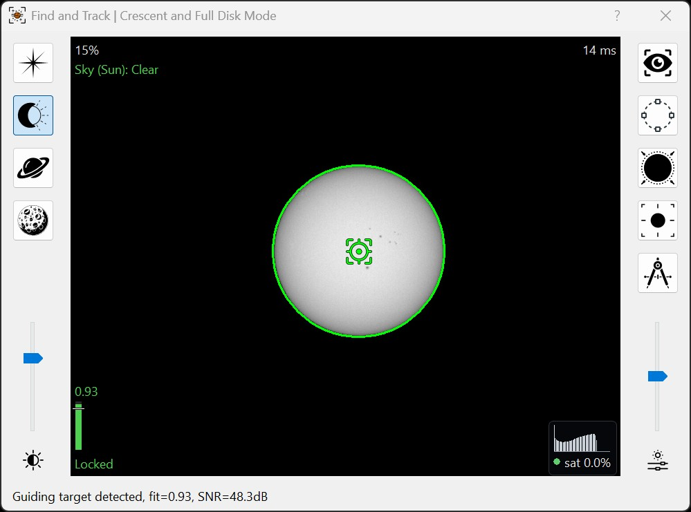
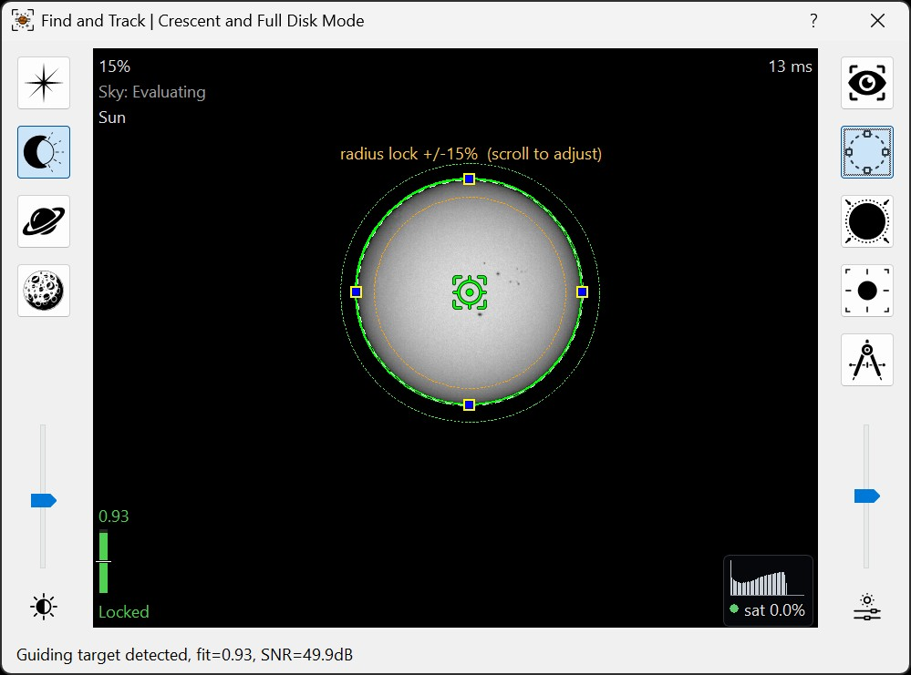
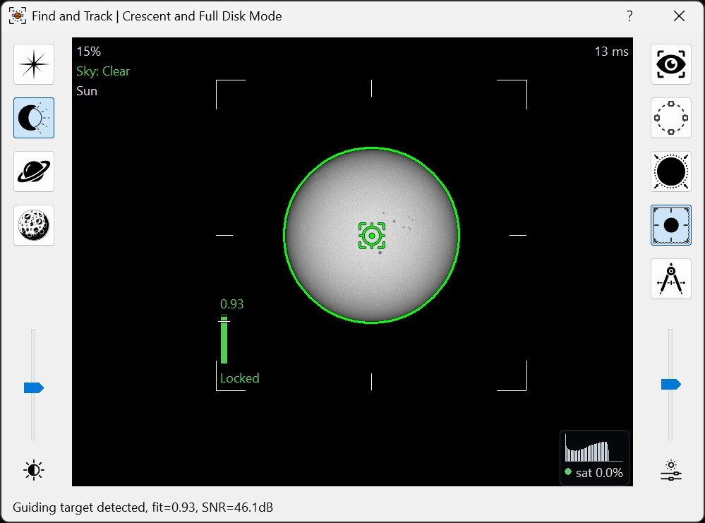
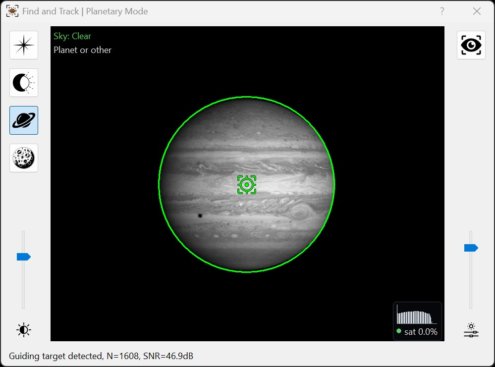
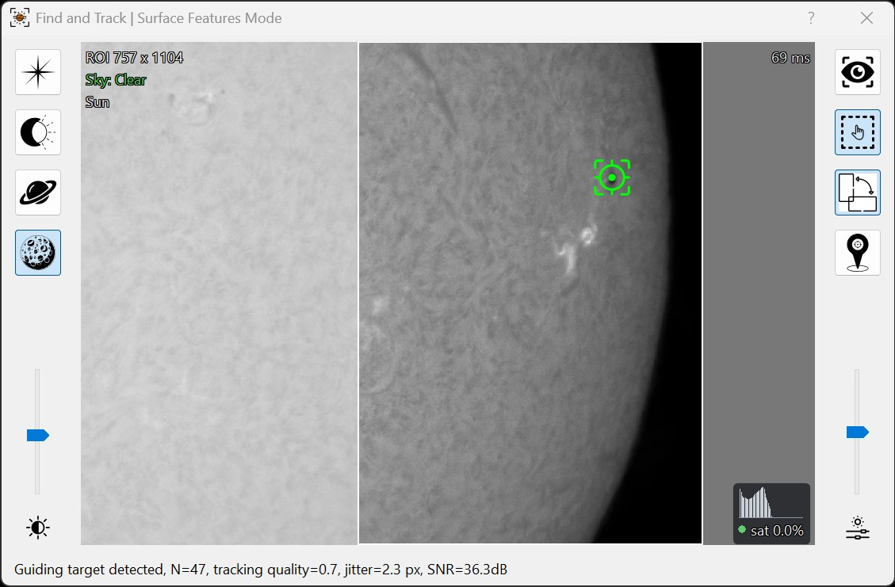
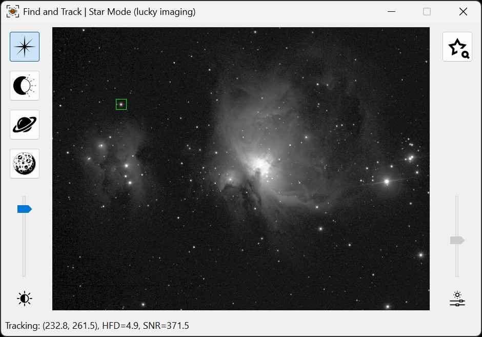
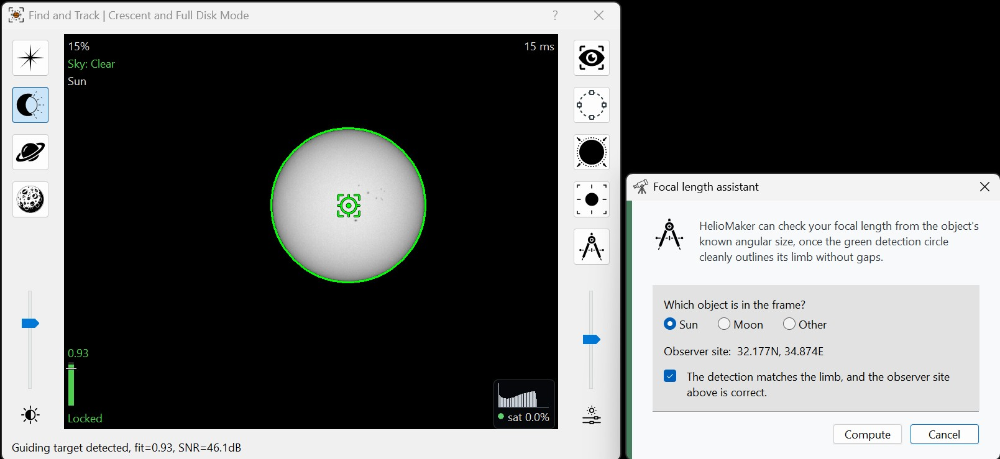

The Find & Track tool is HelioMaker's main interface for selecting and tuning object detection.
It works with a camera shared through SharpCap Pro and with a physical camera connected directly to PHD2.
With a supported custom PHD2 version, HelioMaker receives a continuous live view from either camera arrangement,
performs the selected detection, and supplies the result to PHD2 for guiding.
The Find & Track tool introduces powerful new algorithms to detect and track a full
range of celestial targets: stars; full solar or lunar disks and crescents (including partial eclipses);
planets such as Jupiter and Saturn; and fine surface features. This tool is designed to simplify and
automate object detection in your imaging workflow and make this process fun. Its intuitive interface
presents:
Mode buttons on the left for Star mode, Full Disk and Crescent Shape mode, Planet mode and Surface detection mode.
A screen brightness slider beneath the mode buttons (for display only; does not affect detection).
Mode specific action buttons on the right to trigger auto‑select or other mode tailored actions.
An algorithm-specific tuning slider below the action buttons to fine tune detection accuracy.
Note: In this context, “detection and tracking” refers to identifying and monitoring the position of a celestial object within the field of view.
This should not be confused with PHD2 guiding, which uses the detected position to control the mount by sending guiding corrections. Guiding is a closed-loop
process performed by PHD2, using either its internal detection methods (such as star detection) or position data provided by HelioMaker. This process applies
guiding pulses to keep the target as stable as possible within the field of view.
To clarify, this tool is not related to mount tracking or tracking rate settings. Those must be configured separately. In a basic workflow, this means selecting
the appropriate built-in mount tracking rate, such as Solar, Lunar, or Sidereal, using the mount's control software. For greater accuracy, especially on the Moon,
you may additionally use HelioMaker's Dynamic Target Tracking tool to apply real-time target-specific tracking rates.
The Find & Track tool itself does not manage those parameters.

👉 👉 👉 Tip: Double-clicking the brightness icon on the left side of the panel resets the brightness slider to its default position.
Similarly, double-clicking the tuning icon on the right side resets its slider to the default setting.
What's Changed
If you have used Find & Track in an earlier version, these are the additions worth knowing about.
Improved Surface Features tracking. More reliable
feature matching and reference-image updates help maintain the lock as seeing changes and recover
after temporary loss. The surface-mode slider now has three lock-sensitivity settings, with the
bottom position favoring tracking accuracy and the top requiring the minimum number of trackable
features when the other positions cannot acquire the target.
Landscape/portrait ROI flip. A new button in Surface Features mode switches the
tracking area's orientation to better fit the target. Stop guiding before changing the orientation.
Telemetry overlays on the live image. The view now reports
what the detector is seeing while it is seeing it: lock status, a per-frame fit gauge, detection time,
sky condition, and a live exposure histogram. Hovering any readout expands it to a full label, so
nothing has to be memorised.
The Focal Length Assistant is now a guided measurement.
It asks which object is in the frame, shows the observer site the angular size is computed for, and has
you confirm that the detection matches the limb before it measures. It then averages several
consecutive detections and presents the result for review before anything is changed.
The three Full Disk/Crescent actions are mutually exclusive. The manual marquee,
Autopilot ROI and auto-find each take over the image interaction, so selecting one now reliably
releases the other two along with their overlays. Auto-find stays available while either of the
others is selected, so it can always be used to return to automatic detection.
More reliable mouse-wheel sizing. Resizing the Autopilot ROI or the surface ROI with
the wheel now responds to every notch, including fast scrolls.
Detection on physical PHD2 cameras. Full Disk/Crescent, Planetary and Surface Features
detection are available with a supported physical guide camera connected directly to PHD2, not only
with the shared Virtual Planetary Camera.
General Usage
Prerequisites: PHD2 must be connected in HelioMaker. When the PHD2 profile uses the
Virtual Planetary Camera, SharpCap Pro must also be connected. SharpCap Pro is not required merely to
display a physical PHD2 camera in Find & Track.
Initial mode selection: Launch Find & Track to choose the detection
mode that matches your target type before guiding or calibration begins.
Mode locking: You may switch freely between modes while idle. Once PHD2
starts guiding or calibration, the selected mode remains locked until you stop that process.
Safe to close: After you have tuned detection and achieved consistent tracking,
you can close the Find & Track window to reduce CPU load. Background detection
and tracking continue without interruption.
Camera Configurations
Shared (Virtual Planetary Camera):
SharpCap Pro supplies the live frames used by HelioMaker and PHD2. HelioMaker manages the non-stellar
detection modes and relays the target position to PHD2. In Star mode, PHD2 uses its built-in stellar
detection algorithms.
Physical camera connected to PHD2:
Current versions provide the same live Find & Track view and the same HelioMaker detector choices.
HelioMaker performs Full Disk/Crescent, Planetary, and Surface Features detection on the PHD2 camera frames
and returns the result to PHD2. Star mode continues to use PHD2's native stellar guiding.
If the live physical-camera detection link cannot be established, HelioMaker displays a warning and PHD2
falls back to its own built-in detector for that session. Find & Track will not show live frames from
that physical camera in fallback mode. Use PHD2's Planetary and Solar Guiding Tool to tune the
fallback detector.
License requirement: Planetary and Surface Features modes require an active HelioMaker
license. Their buttons remain visible but are disabled when the product is not activated. Star and Full
Disk/Crescent modes do not require those advanced-detector entitlements. The Virtual Planetary Camera
workflow continues to require an active HelioMaker license for the shared-camera link.
Full Disk and Crescent Shape Mode
Use this tool to detect and enable PHD2 guiding on the full solar or lunar disk, or their crescent shapes, including
partial eclipses (indicated by the eclipse icon). This mode performs reliably even in challenging visibility conditions
such as partial cloud cover, haze, or obstructions like tree branches. In changing conditions, you may need to adjust
the Edge Detection Threshold slider in the right panel of the Find & Track tool for best results.
This mode is designed to detect contours that closely match circular planetary shapes. While it can detect Jupiter,
which appears slightly elliptical due to its equatorial bulge, detection in such cases may be less stable.
For non-circular targets like Jupiter or Saturn, the Planetary Mode (described below) is
generally preferred, as it is capable of detecting and tracking more irregular shapes. However, the Planetary
Mode tends to be more sensitive to haze and cloud interference than the Full Disk and Crescent Shape mode.
In Full Disk and Crescent Shape Mode, you set the approximate diameter of your target
interactively and quickly, far more convenient than editing PHD2 parameters manually. To use it:
Click the eclipse icon on the left (second from the top) to enter Full Disk and Crescent Shape mode.
Adjust the screen brightness slider for a clearer view (affects display only).
Use the circular shape button on the right to enable the selection tool. You can then drag and resize the
circular outline to roughly match the planetary limb. Precise placement is not required, as the automatic
tool will refine the diameter based on the current Edge Detection Threshold slider setting.
Fine-tune detection using the Edge Detection Threshold slider below the action buttons. Hold Shift
while moving the slider, or enable the Eye Button to preview the detected contour in real time. If the Edge Detection
value is set too low, the detector may lock onto faint internal details rather than the outer limb of the planet.
Temporarily enabling the contour preview (shown in red) can help you adjust the slider until the contour closely
follows the planetary limb as a smooth outline.
Press the auto-detect diameter button on the right to let the tool estimate the optimal value.
As a shortcut, you can also double-click inside the circular selection marquee when it is enabled to trigger auto-detection.
Repeat auto-detect and sensitivity adjustments until you see a stable green circle around the object.
Automatic first acquisition: When this mode is entered while idle and no confident
object is already detected, HelioMaker can run auto-find automatically. During guiding, the same
auto-find button performs a constrained re-acquisition near the established target instead of starting
an unrestricted search.
Autopilot ROI: The ROI button prioritizes detection inside the displayed search zone.
Drag the zone to reposition it. With the pointer inside the zone, use the mouse wheel to resize it.
The filter temporarily relaxes after a deliberate move or re-acquisition so that the target can settle
at its new position.
One action at a time: the manual marquee, the Autopilot ROI and auto-find each take
over how the mouse behaves over the image, so only one can be active. Selecting any of them releases
the other two and clears their overlays. Auto-find remains available while either of the others is
selected, giving you a single click back to automatic detection.


👆 Full Disk Detection Mode example screenshots.
Planetary Mode
The Planetary Mode is best suited for objects such as Saturn, Jupiter, and other planets when sky conditions are clear. Note that it is more
sensitive to haze or clouds than the Full Disk or Crescent Shape mode. Planetary Mode offers the Planet detection sensitivity slider and the “eye” button.
The Eye Button is used to show the outer bounding box used for object tracking. Drag the Planet detection sensitivity slider
to preview the detected outline in red; the preview disappears when you release it. Adjust until the outline follows the planet’s visible shape,
including its rings where present, without picking up the surrounding background. Double-click the icon below the slider to reset.
No manual diameter setting is required in this mode.
‼️ This advanced mode requires an active HelioMaker license.
It is available with either a shared camera or a supported physical PHD2 camera.

👆 Planetary Mode example screenshots.
Surface Features Tracking Mode
The Surface Features Mode is designed for detecting and tracking detailed structures on the surface of
the Sun or Moon when using the main imaging telescope at long focal lengths.
The right-hand panel provides several tools to assist with feature tracking:
Eye Button: Toggles the visualization of internally detected surface features. This display helps you verify
how well the algorithm is detecting the surface structure.
ROI Panning Tool: Allows you to reposition the active Region of Interest (ROI) within the frame.
The ROI defines the area where the detection algorithm operates. While guiding is stopped, place the pointer inside
the ROI and use the mouse wheel to make the detection area larger or smaller. Its size is remembered for the current
frame geometry.
Landscape/Portrait ROI Flip Button: Switches the tracking area between landscape
and portrait by swapping its width and height and fitting it within the camera frame. It sits
between the ROI tool and the Pin Tool. Choose the orientation that includes useful target detail
with less surrounding empty sky, for example a portrait ROI around a tall section of the lunar limb.
The button is disabled while guiding. Changing orientation establishes a new tracking reference;
wait for a stable lock before restarting guiding. The orientation is remembered.
Pin Tool: Lets you place a visual marker (pin) on a specific surface feature of interest. The pin remains attached
to the selected feature as long as the algorithm continues to detect the surface reliably. This is particularly useful for observing
tracking stability during the session.
The right-hand lock sensitivity slider controls how demanding the detector is about
the trackable surface features needed to establish a lock. It has three positions:
Bottom: favors the most accurate surface tracking by requiring a rich set of
higher-quality features for the tracking reference. Use it when the target provides enough distinct
detail; it is more selective about establishing a lock.
Middle: the default setting; start here for normal use.
Top: requires the minimum number of trackable features. Try it
when the target has few unique features and the other slider positions do not detect it. This
setting may obtain a target lock, but tracking performance can be inferior to the more selective settings.
Choose the most selective setting that gives a stable lock on your target. Double-click the tuning
icon to restore the default. Use the Eye Button, Pin Tool, and lock-status readout to assess tracking
over several frames: obtaining a lock alone does not guarantee the best tracking accuracy.
Surface Features Mode is ideal for applications such as monitoring sunspots, filaments, prominences, or lunar surface details.
Tracking accuracy depends on the available surface detail, image quality, and selected lock sensitivity.
‼️ This advanced mode requires an active HelioMaker license.
It is available with either a shared camera or a supported physical PHD2 camera.

👆 Surface Features Tracking Mode example screenshot.
Star Mode (lucky imaging)
In Star Mode, Find & Track relies on PHD2’s built-in star detection algorithms instead of HelioMaker’s planetary routines.
This mode supports both single-star and multi-star guiding using PHD2’s native settings.
When using the shared-camera workflow, Star Mode is the mode required for lucky imaging or SharpCap Pro
Live Stack sessions. For a full description of this workflow, including SharpCap Pro and PHD2 connection settings,
timing guidance, and Live Stack notes, please refer to
Lucky Imaging / Live Stack.

👆 Star Mode example screenshot.
To use Star mode, ensure SharpCap Pro and PHD2 are both connected in HelioMaker. You can connect
SharpCap Pro to PHD2 in parallel by enabling PHD2 in SharpCap’s 'Guiding' settings (see below). Once both are linked, open Find & Track and click
the star icon. The right hand sensitivity slider is disabled in this mode; detection relies
entirely on PHD2’s algorithms.
Focal Length Assistant
An accurate focal length is what PHD2 uses to convert pixels into arcseconds, so it underpins calibration
accuracy and, through that, guiding precision. The Focal Length Assistant measures it for
you from the one object whose true angular size is already known: the Sun or the Moon.
The assistant is the dividers button on the right-hand toolbar. It appears in Full Disk/Crescent mode only,
and is enabled while PHD2 is looping or guiding. Run it before calibration.

👆 The Focal Length Assistant, opened over a locked full-disk detection.
Before measuring, the assistant asks you to confirm three things in a single panel:
Which object is in the frame. Sun or Moon. Other targets have no known angular size to
measure against, so the assistant does not work with them.
The observer site. Shown so you can check it, because the object's angular size on the
day is computed for that location. If no site is set, the assistant says so.
That the detection matches the limb. The measurement is only as good as the green circle
it measures, so Compute stays disabled until you confirm this. Tune the detection until the
circle cleanly outlines the limb with no gaps, then tick the box.
The assistant then averages several consecutive stable detections, discarding outliers, and shows the result
for review: the measured diameter in pixels, the object's angular diameter, the effective pixel size, your
current focal length, and the suggested one with the percentage difference. Nothing is changed until you
choose Apply.
With the Virtual Planetary Camera, applying the result updates the primary imaging system focal length.
With a physical PHD2 camera, applying the result updates the guidescope focal length stored in PHD2.
Camera binning and automatic image scaling are included in the calculation.
‼️ Re-run PHD2 calibration after applying a changed focal length.
Telemetry Overlays
The live image carries a set of readouts that report what the detector is seeing, frame by frame. Together
they let you tell a camera-exposure problem from a detection-tuning problem before calibration or guiding
begins, without reading any log. Hover over any readout to expand it into a full label, so
there is nothing to memorise.
Lock status (lower left): No target in grey,
Lock unstable in amber, or Locked in green. This is a smoothed
judgement built from how consistent the detection has been over recent frames, not a single score
cutoff, so a faint but steady target still reads as locked, while an erratic bright one does not.
Fit gauge (just above the lock status): a vertical bar showing the current detection
score with its numeric value, and a tick marking the threshold the detector is currently holding it
against. Green at or above the threshold, orange below. This is the per-frame view that complements the
smoothed lock status.
Detection time (upper right): how long the current frame took to process.
Radius tolerance (upper left, Full Disk/Crescent): the size band the detection is
allowed to vary within, useful while tuning the lock.
Sky conditions (upper left; not in Star mode, and hidden during eclipse runs and SHG scans)
shows how clear the view of the target is, compared with HelioMaker's evaluation of the clear sky. The line below
it names the target the evaluation is for (see Observed target). Hover over
the readout for more detail.
Evaluating: working out what the clear sky looks like, or waiting until the target can be
measured.
Clear: the view matches the evaluated clear sky.
Degraded? with a percentage: the view may be getting worse. Degraded:
it has clearly worsened. A likely cause may be shown: Airmass ↑? as the target
sinks toward the horizon, or Cloud/haze?. Blocked (static?) suggests a
steady obstruction. While evaluating, a sudden drop shows as Degraded? (evaluating) or
Degraded (evaluating).
No usable image: the images are nearly black, whatever the cause.
Unavailable: no current images to judge. Unavailable (error) or
Degraded (cloud detection stopped): cloud detection has stopped; restart it from the
right-click menu.
(evaluating N%) or (not reverified) after a warning, in Surface Features
detection: a camera or tracking change restarted the evaluation, and the warning stays because
nothing has checked the sky since. If the sky is clear, evaluate it again from the right-click menu.
, hold off after a warning: you resumed the sequence by hand, so this warning no longer
holds it paused.
In this version the readout is for information only: it does not pause or resume a sequence, except that a
pause caused by lost detection during No usable image lasts until the readout shows
Clear. Right-click the readout and choose Evaluate the sky again... to start a new
evaluation from the current view (a cloudy view is then taken as clear sky), or, after an error,
Restart cloud detection....
Observed target (upper left, the line below Sky conditions): the target set by
Observed target in Sequence Options, shown as
Sun, Moon or Planet or other; hover over it to read, for example,
Observed target: Sun. Check it before a session: the Sky readout allows for the Sun's or Moon's
natural dimming as it nears the horizon, so with the wrong target that dimming can read as haze or cloud.
Changing the target in Sequence Options updates the line and starts the sky evaluation again.
For Sun or Moon, also verify the observer location and time zone in Dynamic Target Tracking and check
the PC's date, time and time-zone settings; see the
observer-site and time guidance.
Exposure histogram (lower right): the brightness distribution inside the detection
region, with a coloured dot and a sat percentage giving the share of clipped highlights. The
rightmost bar turns red as soon as anything clips. Hover it for a plain-language verdict:
Overexposed, Underexposed or well exposed. Surface Features mode warns earlier than
the other modes, because fine surface detail degrades with even slight clipping.
Framing reticle: corner brackets and edge ticks marking the Autopilot ROI, drawn so
they stay legible over both dark and bright frames.
The status line beneath the image carries the same information in text form, including the fit score and
signal-to-noise ratio, with the additional detail relevant to the active mode.